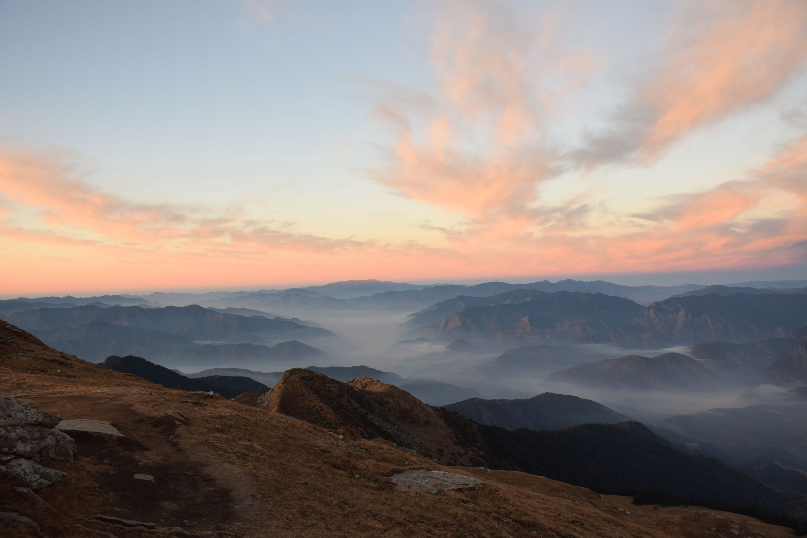
Kedarkantha summit · sunriseOff the clock.
Days go to data and markets. The rest goes to a camera, a guitar, a book, a trail or the gym.
Photography and film.
The camera taught me to notice things. These are from my third-year trips: leopards and langurs in Jawai, a sunrise summit on Kedarkantha, the temples of Osian. I also ran media for Prometeo '26, where several reels crossed 500k views, and mentored 50+ students at Frame-X. More on Instagram ↗
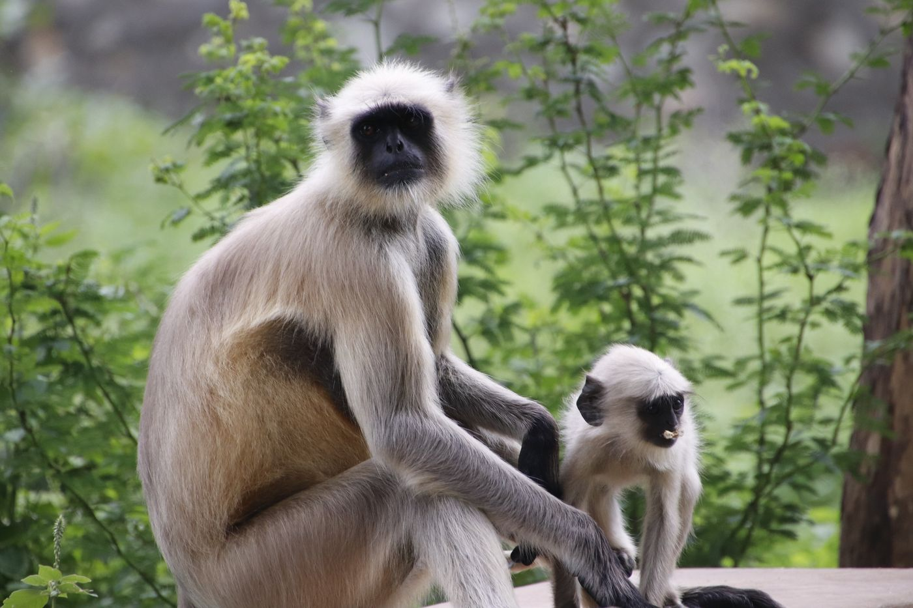
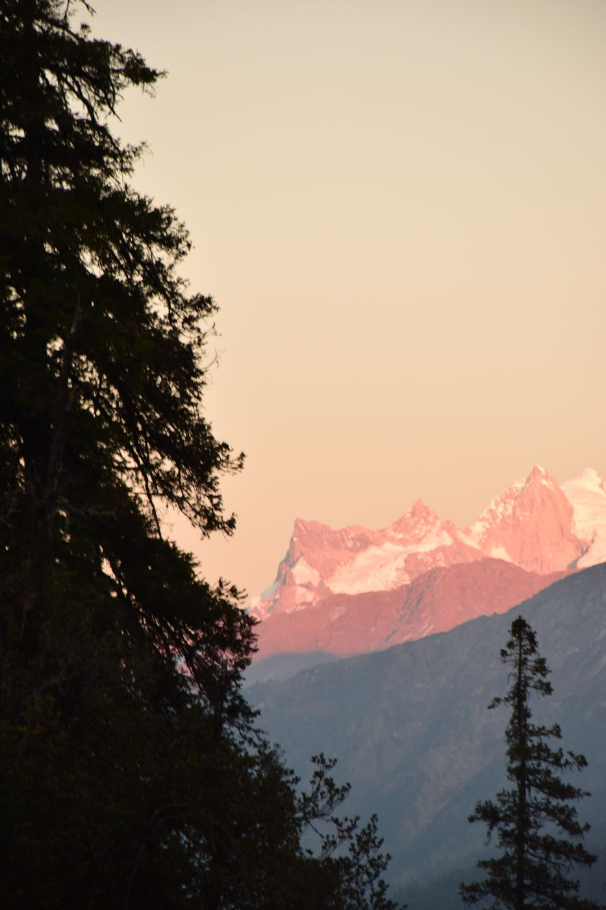
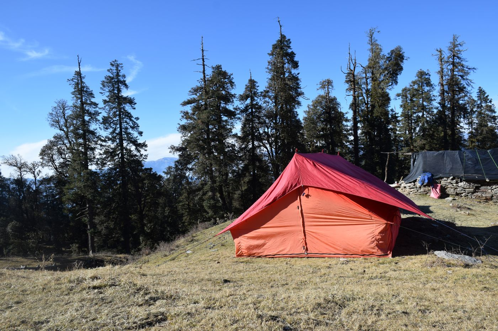
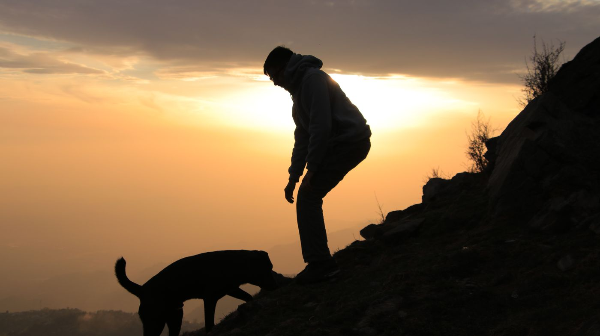
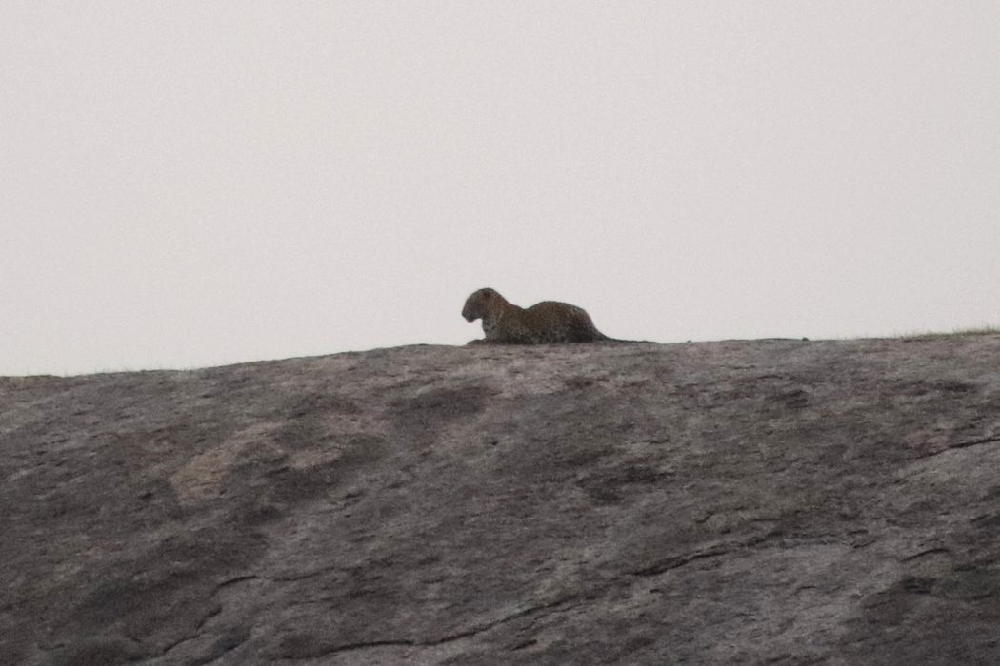
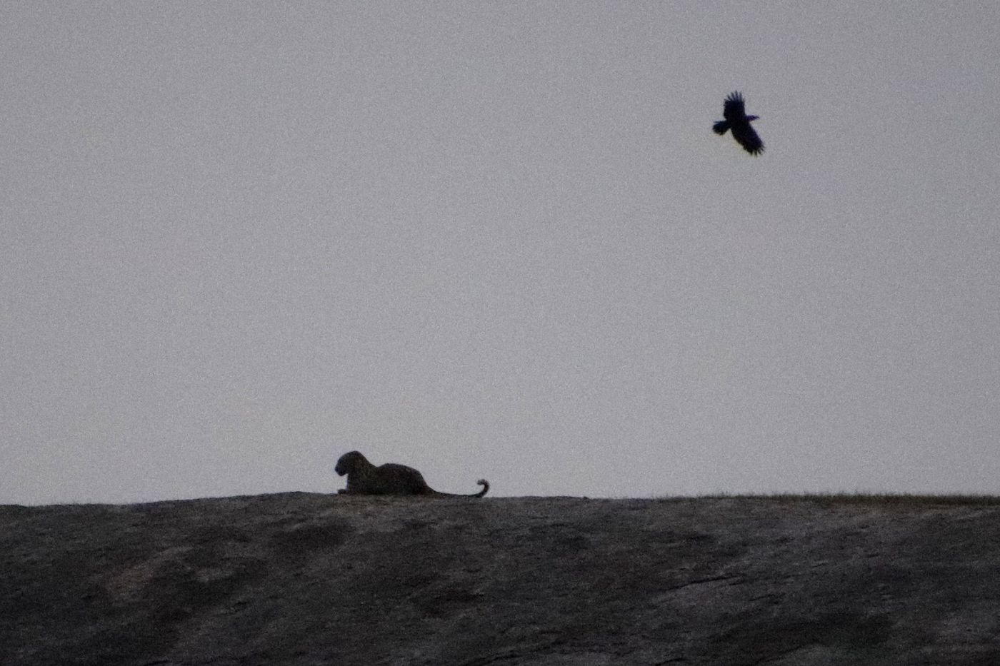
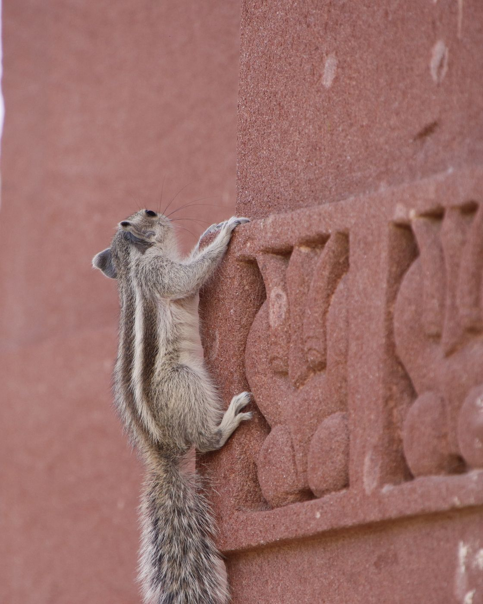

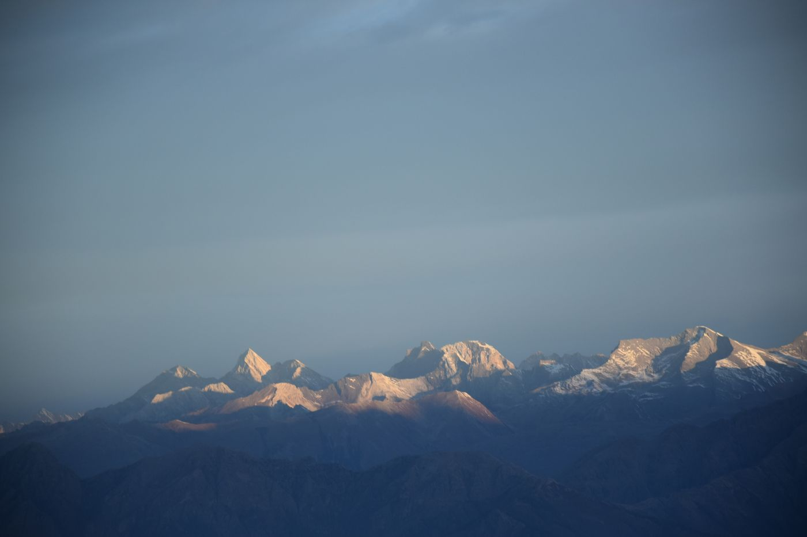
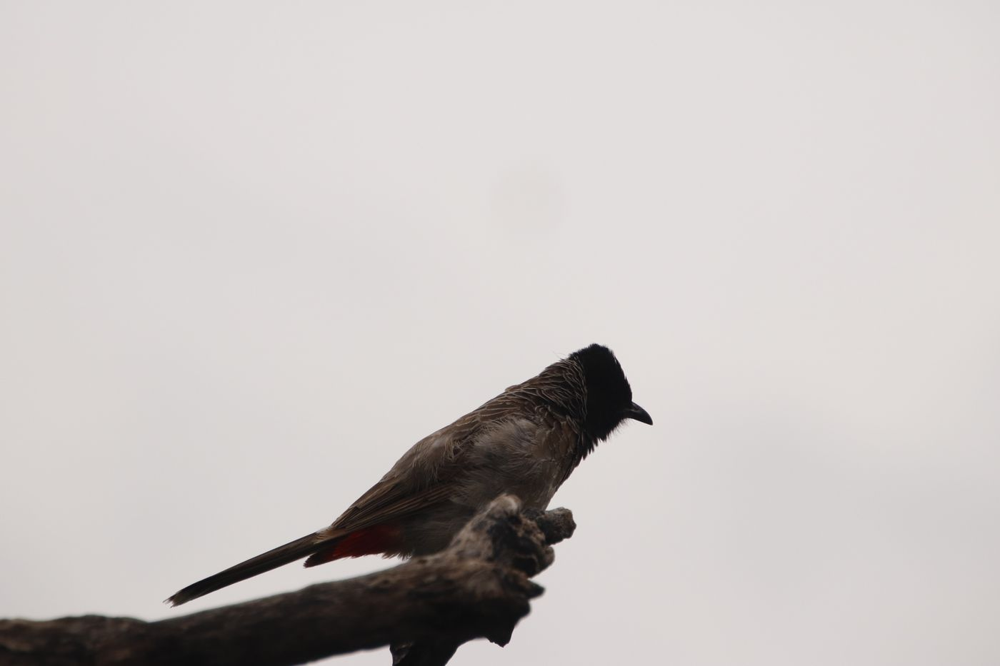
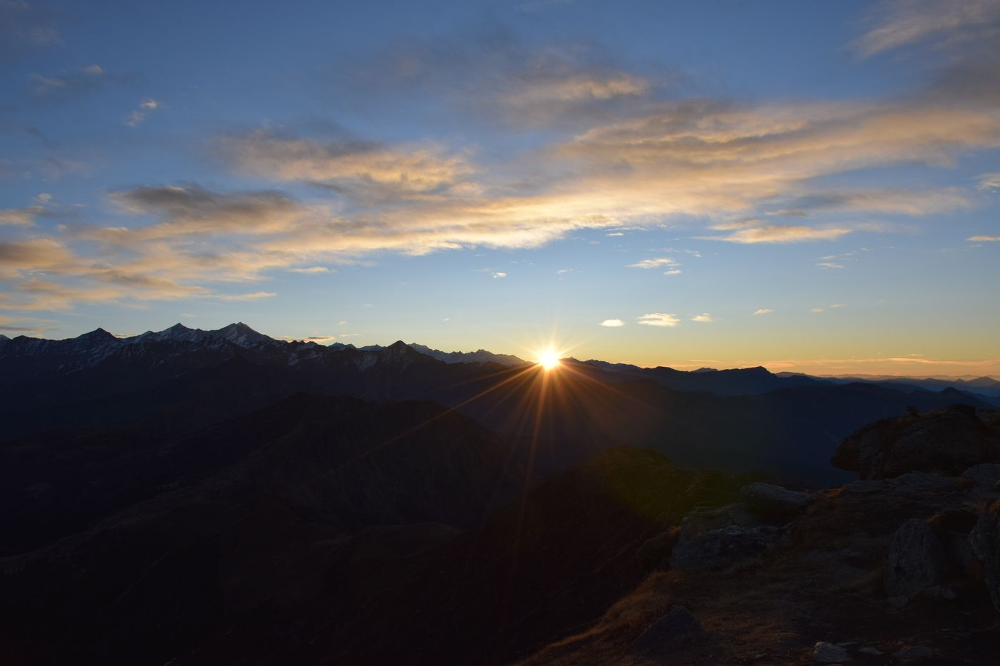
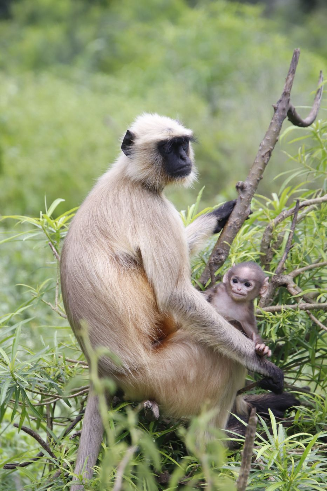
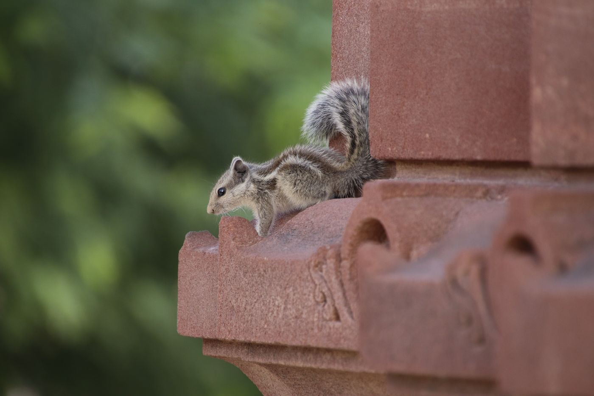
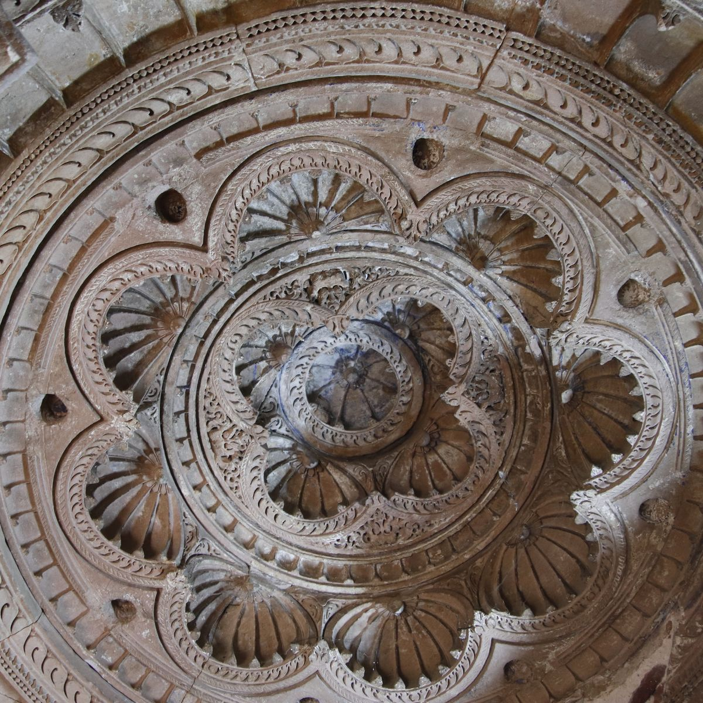
The rest of the week.
Photography
Wildlife, landscapes and street. I edit everything myself.
Always carrying oneFingerstyle guitar
One arrangement at a time, slowly and properly.
LearningBooks
The Count of Monte Cristo, a few pages every night before lights out.
Reading nowGym and running
Early-morning gym and tennis, building up to a steady 5k.
TrainingTreks and travel
Kedarkantha, leopard country in Jawai, the temples of Osian. Always with a camera.
ExploringStage and comedy
Cultural Captain for Speaking and Comedic Arts at two Inter IIT Cultural Meets.
On stage